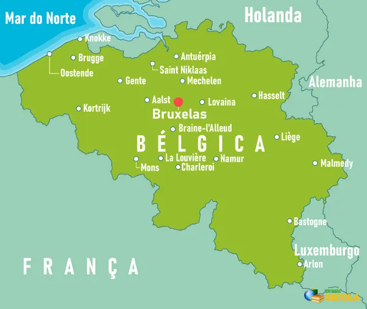
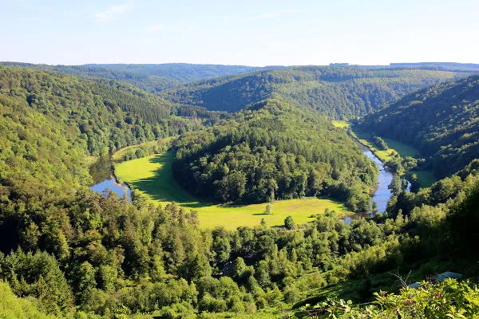
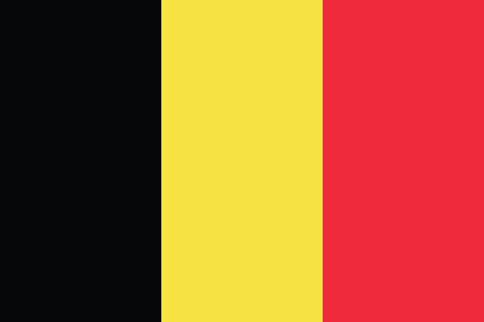
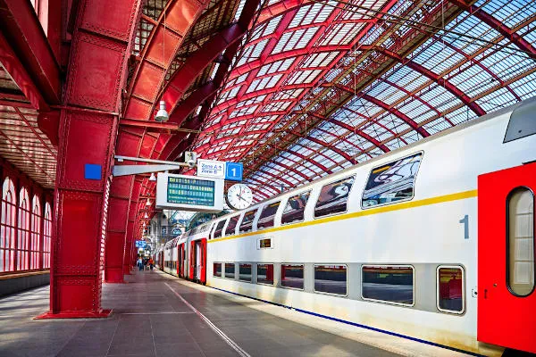

BÉLGICA
• A Bélgica é um país de clima temperado oceânico da Europa Ocidental.
• Possui três idiomas oficiais e pouco mais de 11 milhões de habitantes, concentrados na região de Flandres.
• A Bélgica é um país da Europa Ocidental.
• De clima temperado oceânico e terreno pouco acidentado, o país possui área de 30,5 mil km² e um litoral estreito banhado pelo Mar do Norte.
• Sua população é de 11,59 milhões de habitantes, os quais se dividem em três regiões (Flandres, Capital Bruxelas e Valônia) e são falantes de três línguas: holandês, alemão e francês.
• Altamente desenvolvida, sua economia se concentra no setor de serviços.
• O sistema de transportes moderno do país o coloca em posição de destaque na logística europeia.
Seleção Belga de Futebol
História
A primeira partida da seleção belga foi disputada a 1 de maio de 1904, em empate por 3 a 3 contra a França. De início, a equipe contou com ajuda de alguns jogadores ingleses, fazendo com que estas partidas não fossem consideradas.
Em 28 de abril de 1901, o time havia batido Países Baixos por 8 a 0.
A equipe recebeu o apelido de Os Diabos Vermelhos do jornalista Pierre Walckiers em 1906, após vitória por 3 a 2 contra Países Baixos em Roterdã.
A Bélgica esteve presente em onze mundiais, sendo que sua melhor classificação se deu em 2018 na Russia, onde terminou na terceira colocação. Na Eurocopa, o melhor desempenho foi o vice-campeonato em 1980.
Nas Olimpíadas de 1900, a Bélgica foi representada pela Université de Bruxelles e conquistou a medalha de bronze. Na edição de 1920 do torneio, a seleção disputou o campeonato e venceu, conquistando a medalha de ouro.
Atualmente, tem a considerada "geração de ouro" da Bélgica. Na Copa do Mundo de 2002, após campanha regular, caiu contra o Brasil em uma das maiores controvérsias em Copas do Mundo na anulação do gol legítimo de Marc Wilmots, onde o árbitro inexplicavelmente marcou falta em cima do então zagueiro brasileiro Roque Júnior.
Nas eliminatórias para a Copa do Mundo de 2014, ganhou quase todos os jogos, pois empatou apenas dois e não perdeu nenhum. Na Copa de 2014 fez uma boa campanha chegando as quartas de final e caindo para a Argentina, quando havia vencido 4 partidas, algo até então inédito para a Bélgica, como é uma seleção muito jovem, segue promissora para os próximos anos.
Copa do Mundo de 2018 Na Copa do Mundo de 2018, a Seleção Belga ─ que já havia enfrentado duas eliminações para a Argentina na Copa do Mundo de 2014 e para o País de Gales na Euro 2016 ─ caiu no Grupo G: um grupo relativamente fácil, com Panamá, Tunísia e Inglaterra. Venceu os três jogos por 3 a 0, 5 a 2, e 1 a 0, respectivamente. Chegou às oitavas de final contra o Japão e provou seu poder de reação ao transformar um revés de 2 a 0 em uma vitória heroica de 3 a 2, com direito a um gol de contra-ataque de Chadli faltando 10 segundos para o término da partida. O adversário nas quartas de final era o pentacampeão Brasil, derrotado por 2 a 1 graças a um gol contra de Fernandinho e outro golaço de contra-ataque de Kevin De Bruyne. Caiu nas semifinais para a França, porém garantiu o 3º lugar e a melhor campanha de sua história em Copas do Mundo ao vencer novamente a Inglaterra, em 14 de julho de 2018, por 2 a 0.
Títulos
Medalha de ouro nos Jogos Olímpicos: 1 (1920)
Observação: Os Jogos Olímpicos de 1908 até 1956 são considerados títulos oficiais: [1]. Copa Kirin: 1 (1999)
Campanhas de destaque Copa do Mundo: 3º lugar em 2018 e 4º lugar em 1986 Eurocopa: 2° lugar em 1980; 3° lugar em 1972 Olimpíadas: medalha de bronze em 1900
Dados gerais da Bélgica
- Nome oficial: Reino da Bélgica
- Gentílico: belga
- Extensão territorial: 30.528 km²
- Localização: Europa Ocidental
- Capital: Bruxelas
- Clima: Temperado Oceânico
- Governo: monarquia constitucional
- Divisão administrativa: três regiões (Capital de Bruxelas, Flandres, Valônia), províncias, municípios, submunicípios
- Idioma: alemão, francês e holandês
- Religiões:
- - católica: 50%
- - protestante e outras religiões cristãs: 2,5%
- - muçulmanos: 5%
- - judeus: 0,4%
- - judeus: 0,4%
- - judeus: 0,4%
- - budistas: 0,3%
- - ateus: 9,2%
- - sem religião: 32,6%
- População: 11.590.000 habitantes (ONU, 2020)
- Densidade demográfica: 382,7 hab/km² (ONU, 2020)
- Índice de Desenvolvimento Humano (IDH): 0,931
- Moeda: Euro (€)
- Produto Interno Bruto (PIB): US$ 543,026 bilhões
- PIB per capita: US$ 47.293
- Gini: 0,274
- Fuso horário: GMT +1 hora (Horário Padrão da Europa Central)
- Relações exteriores:
- - ONU
- - União Europeia
- - G10
- - FMI
- - Otan
- - OEA (observador)
- - OCDE
- - OMC
- - Clube de Paris
História da Bélgica
Anteriormente sob o domínio de outros territórios, o Reino da Bélgica formou-se em 1830, fato marcado pela proclamação de sua independência da Holanda. Foi instaurada a monarquia constitucional como forma de governo. A Holanda, no entanto, reconheceu a independência belga apenas no ano de 1839.
A partir da segunda metade do século XIX, também a Bélgica aderiu às práticas imperialistas e exerceu domínio no Congo, na África, em 1908. O país constituiu outras duas colônias no continente africano: Ruanda e Burundi.
Durante a Primeira e a Segunda Guerra Mundial, foram realizadas invasões alemãs no território belga, entre elas a ofensiva conhecida como guerra relâmpago (Blitzkrieg), em maio de 1940.
Mapa da Bélgica
Geografia da Bélgica
A Bélgica é um país europeu localizado no oeste do continente. Possui extensão territorial de 30.528 km², o que a coloca entre os 20 menores países em área da Europa.
O país tem saída para o oceano Atlântico, no mar do Norte, em um estreito litoral de 66,5 km localizado a noroeste. Faz fronteira:
• ao norte e nordeste, com a Holanda;
• ao leste, com a Alemanha;
• ao sudeste, com Luxemburgo;
• ao oeste, com a França.
O território belga é dividido em três regiões: Flandres, ao norte, Valônia, ao sul, e a Capital Bruxelas, a menor região do país e onde está, como o nome indica, sua capital.
Clima da Bélgica
Situada em altas latitudes, a Bélgica está inserida na zona temperada do planeta. A presença do mar do Norte é, além disso, um dos principais condicionantes do clima do país, que é do tipo Temperado Oceânico.
As temperaturas são moderadas na maior parte do ano, com médias de 3 ºC no inverno e 17 ºC no verão, podendo haver raros extremos, que variam de temperaturas abaixo de 0 ºC até 40 ºC. Há ocorrência de ventos do oeste, além de forte nebulosidade e elevados índices pluviométricos.
Vegetação da Bélgica
A cobertura vegetal do país é composta predominantemente por floresta estacional decidual, caracterizada pela perda das folhas na estação seca. As árvores mais comuns são os carvalhos, faias, olmos e bétulas. Ao sul, onde o relevo é montanhoso, a vegetação é composta por espécies de coníferas.
Relevo da Bélgica
A Bélgica é divida em três compartimentos: o primeiro é o da planície costeira, no noroeste do território. É caracterizado pelas terras planas e pelo cordão de dunas na faixa litorânea, formadas pela ação dos ventos e das águas. A paisagem do litoral é composta, ainda, por diques construídos para a contenção do avanço das águas do mar do Norte nas áreas mais rebaixadas.
A porção central do território belga é formada pelo platô central, onde as altitudes variam entre os 100 m e 200 m.
Nas terras ao sul e sudeste, principalmente, predominam as colinas e montanhas, das quais se destaca a formação das Ardenas. Nessa região, as cotas ultrapassam os 500 metros. O ponto mais elevado da Bélgica é a montanha Signal de Botrange, com 694 metros.
Hidrografia da Bélgica
O rio Mosa é o maior e um dos principais rios da Bélgica. Ele se estende por cerca de 180 km na faixa leste do país, e possui, no total, 950 km de comprimento. O segundo maior é o Escalda, que corre no noroeste do território belga.
Demografia da Bélgica
As estimativas mais recentes da ONU indicam que a Bélgica conta com 11,59 milhões de habitantes. O território belga é um dos mais povoados da Europa, considerando a densidade demográfica de 382,7 hab/km² (ONU, 2020).
A população está concentrada no norte do país. A região de Flandres é a mais populosa, com mais de 6 milhões de habitantes. A região onde se encontra a capital, por sua vez, é a mais povoada, e sua densidade demográfica é de 7.384 hab/km², conforme dados de 2017.
Um total de 98,1% da população belga vivem nas cidades, sendo Bruxelas a mais populosa, com mais de 2 milhões de habitantes. A idade média no país é de 41,6 anos, e a expectativa de vida de 81,65 anos é considerada elevada.
Além dos nascidos no território belga, sua população é composta por italianos, marroquinos, franceses, turcos e alemães.
O país possui três línguas oficiais: o holandês, falado pela maior parcela da população, concentrada na região de Flandres; o francês, mais falado na região Capital Bruxelas e na Valônia; e o alemão, que se concentra nas cidades próximas da fronteira com a Alemanha.
Economia da Bélgica
O Produto Interno Bruto (PIB) da Bélgica é de US$ 543 bilhões, enquanto o seu valor per capita fica em US$ 47.293, de acordo com as informações da ONU (2020). Ambos os valores colocam a Bélgica entre as 30 maiores economias do mundo, e entre as 10 maiores da União Europeia.
A economia do país é altamente concentrada no setor de serviços, que responde por mais de 70% do PIB e pela maior parte da mão de obra. As atividades financeiras e o comércio são os principais destaques do terciário, seguidos do turismo. Este é mais intenso na região de Flandres, no norte do país, e nas montanhas e florestas de Ardenas.
O setor secundário representa uma parcela de cerca de 22% do PIB. O parque industrial belga possui grande diversidade, e abrange indústrias como a automobilística, química, farmacêutica, de produtos de engenharia, metalúrgica, têxtil, alimentícia e petrolífera.
A agropecuária responde por apenas 1,3% da economia belga. As principais culturas são beterraba sacarina, batata, trigo, milho, cevada, chicória. Na pecuária, o país se destaca na produção de leite e derivados e carne suína.
Bandeira da Bélgica
Cultura da Bélgica
A riqueza cultural da Bélgica está relacionada com as diferentes origens da sua população e a composição linguística do país, que possui três idiomas oficiais.
Pensando nas regiões, Flandres se destaca nas artes visuais, e as regiões da capital e dos municípios de Liège, Ghent e Antuérpia são conhecidas pela música de vanguarda. O país possui um extenso calendário de festivais de música, os quais abrangem todos os estilos, desde o metal e eletrônica até a música clássica. Ademais, Bruxelas é reconhecida como a capital internacional das histórias em quadrinho.
A gastronomia belga possui destaque mundial, o que se deve ao seu chocolate de elevada qualidade, um dos principais produtos de exportação do país, e aos diversos tipos de cerveja artesanal. Entre os pratos tradicionais do país, está o mexilhão com batatas fritas ou moules frites.
Infraestrutura da Bélgica
A Bélgica possui uma rede de transportes densa e moderna que favorece tanto o desenvolvimento econômico do país quanto a interconexão com os demais países europeus, sendo descrita como um centro logístico regional:
• sua malha ferroviária é considerada uma das mais densas do mundo, com extensão de 3.602 km em 2018;
• as rodovias somavam 118.414 km em 2015;
• a extensão total das hidrovias era de 2.043 km em 2012.
A Bélgica possui, ainda:
• dois portos marítimos;
• quatro portos fluviais, dos quais se destaca o da Antuérpia;
• e 41 aeroportos (2013).
Governo da Bélgica
A Bélgica tem como sistema de governo a monarquia parlamentarista. O seu atual rei é Philippe Leopoldo Luís Maria, que assumiu o trono em 2013. O primeiro-ministro do país é Alexander De Croo, que chegou ao cargo em 2020.
Curiosidades sobre a Bélgica
O protagonista da famosa série “As aventuras de Timtim” foi criado pelo artista belga Hergé, em 1929.[1]
O protagonista da famosa série “As aventuras de Timtim” foi criado pelo artista belga Hergé, em 1929.[1]
O geógrafo, cartógrafo e matemático Gerhard Mercator nasceu na Bélgica, na região de Flandres, em 1512.
A Bélgica abriga o Museu da História em Quadrinhos na capital, Bruxelas. Alguns dos mais famosos personagens dos quadrinhos foram criados no país, como Timtim e os Smurfs. A cidade possui, ainda, uma rota conhecida como “Rota dos Quadrinhos” para a visitação dos grandes murais, pintados em edifícios da capital, com seus personagens.
Na gastronomia, além do waffle, que surgiu no país, as famosas batatas fritas têm sua origem na Bélgica, no século XVII — informação essa contestada pelos franceses.
Crédito da imagem: [1] NeydtStock / Shutterstock
GUITARRARA, Paloma. "Bélgica"; Brasil Escola. Disponível em: https://brasilescola.uol.com.br/geografia/belgica.htm. Acesso em 21 de novembro de 2022.